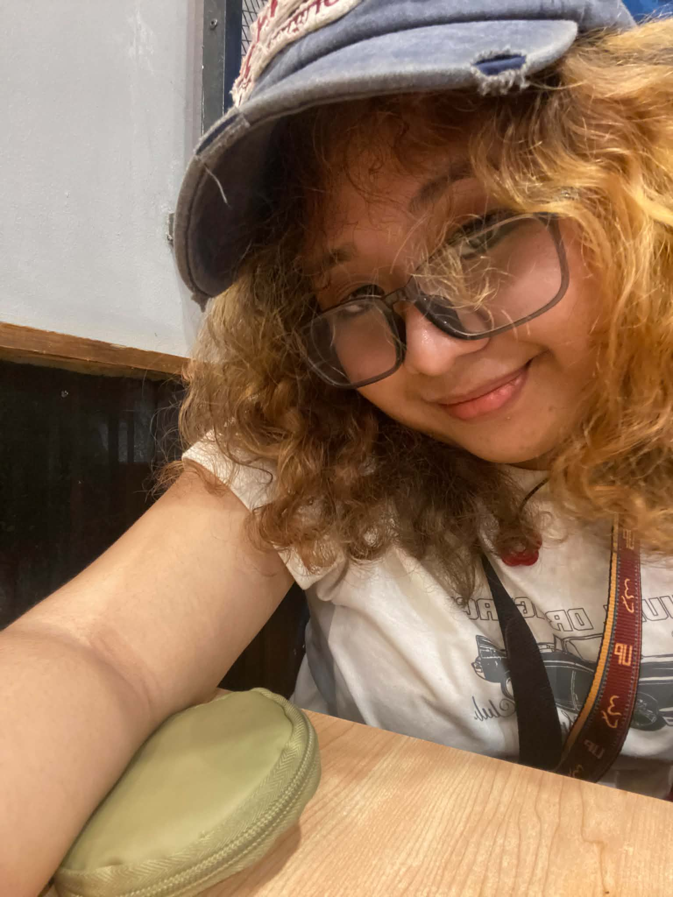
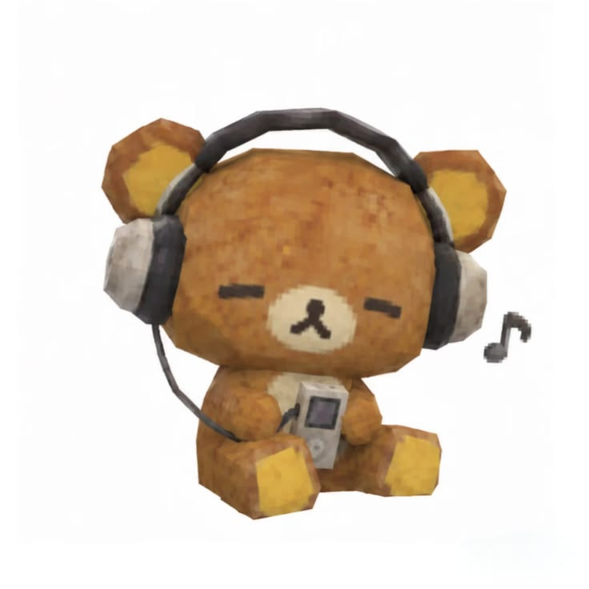
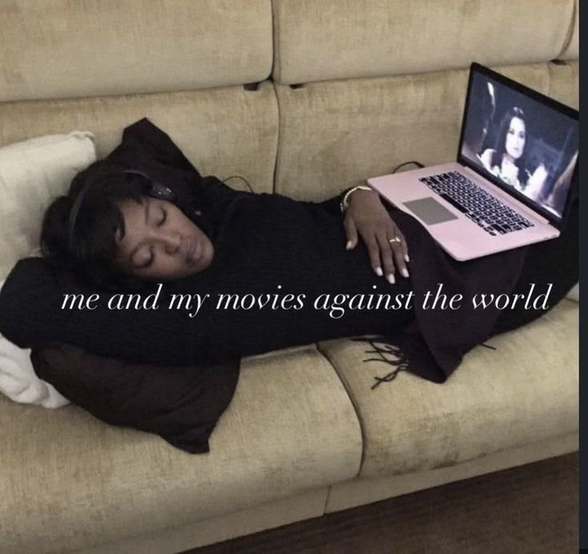
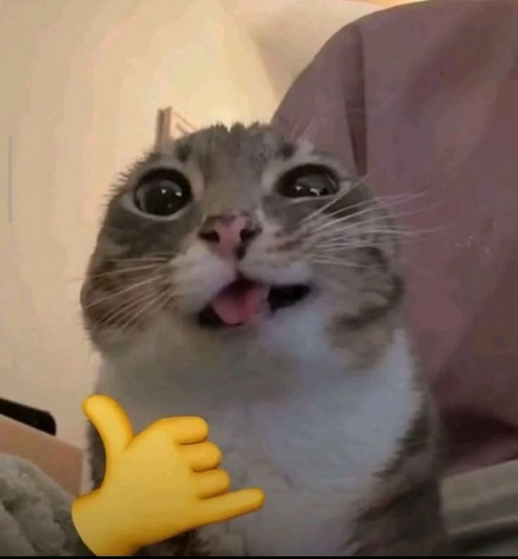
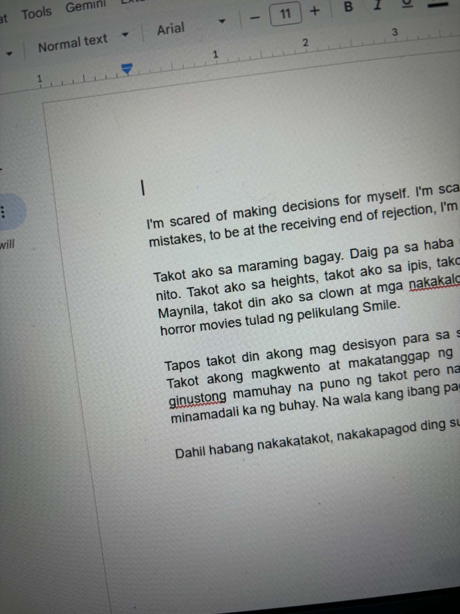
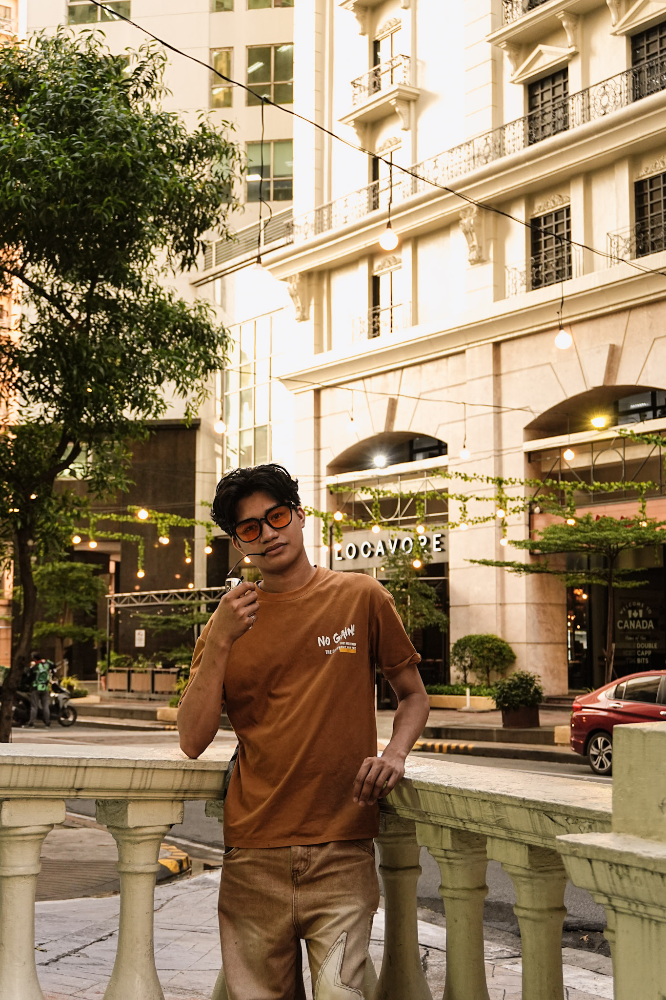
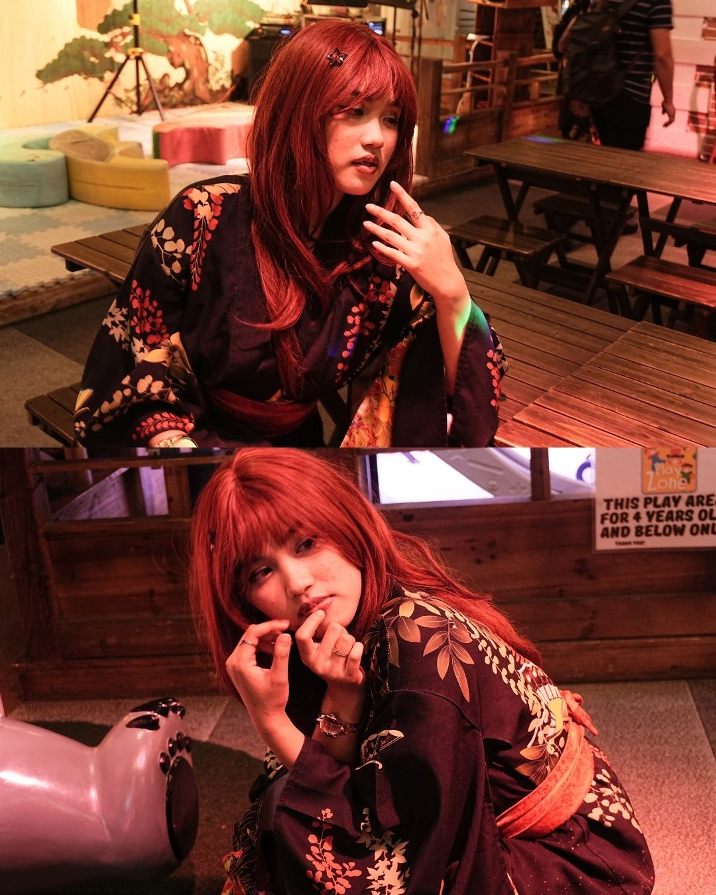
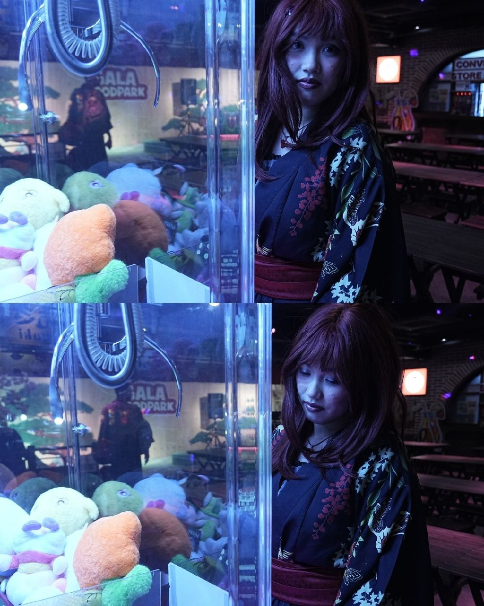

carpe diem

Hi! I'm Marianne, but most of my friends and peers call me Mayang.
I am currently in my third year at the University of the Philippines Open University (UPOU), taking up a Bachelor of Arts in Multimedia Studies
(BAMS). One thing about me is that I tend to work and learn better in a face-to-face setup, so studying in an open university where almost
everything happens online has been quite a challenging journey for me. On the brighter side, being part of UPOU has opened up a lot of opportunities
for me to become more independent, improve my skills, and discover new ways of learning. It has also taught me to become more flexible and
responsible when it comes to my studies.
Outside academics, I enjoy listening to music, especially OPM, watching movies, and attending live gigs
whenever I get the chance. I also enjoy spending my free time with my orange cats, who never fail to keep me entertained.
I have always been interested in creative activities, particularly writing, exploring multimedia, and expressing my thoughts through different
forms of art and media.
I may still have a lot to learn and figure out along the way, but I believe that every experience, whether challenging
or exciting, is an opportunity to improve myself. After all, I try to live by the phrase carpe diem and make the most out of every opportunity
that comes my way.

Listening to music
Watching movies
Spending time with my cats
Expressing myself through writingI have always been interested in enhancing my photography skills. For practice,
I accept mini photoshoot projects for my friends.



You can reach me through:
Email: mrestribillaa@up.edu.ph
Instagram: @purreveryang
Facebook: Marianne Estribilla